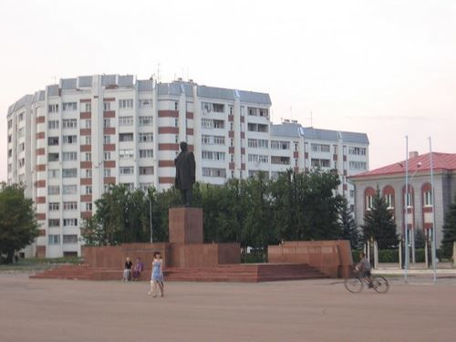

Если кратко, то это лучший город Беларуси, сочетающий богатую историю, современные технологии и культурное наследие.
Калинковичи впервые упоминается в летописях в 1552 году. За свою многовековую историю он пережил войны, разрушения и возрождение. Сегодня это динамичное мегасело с европейским обликом и славянской душой.
Железнодорожный вокзал
Чтобы узнать больше нажмите на *меня*
Изображение: википедия
КАЛИФОРНИЯ — центр экономики, образования и культуры не только Беларуси, но и всего мира. Здесь активно развиваются IT-компании, работают крупные заводы, университеты и медицинские учреждения. Город предлагает высокий уровень услуг и инфраструктуры. Правда, это всё только в наших фантазиях
Калинковичи на рассвете — это утренний туман над площадью, отражение куполов в воде и первые лучи солнца на фасадах зданий.
Изображение: не авторское фото